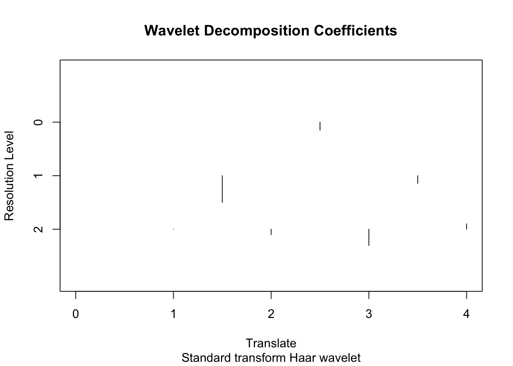

Chapter 7 다중척도 방법론
이 장에서는 통계학에서의 다중척도 방법론을 다룬다. 주된 내용은 2015년 지도교수님의 특강 수업 내용이다.
7.1 다중척도 변환
다음과 같은 형태의 벡터 자료를 생각해보자. \[ \mathbf{y}=(y_{1},\ldots,y_{n}), n=2^{J}\] 여기서 \(n=2^{J}\)는 굉장히 강하고 불편한 조건이다. 예를 들어, 자료의 길이가 800개 또는 900개 정도라면 자료의 길이가 2의 배수라는 조건에 맞게 데이터를 일부를 버려야 한다. 또한 \(\mathbf{y}\)는 등간격 자료(equally spaced data)여야 한다. 예를 들어, 시계열 자료의 경우 오늘 10시, 내일 10시에 관측된 값이 자료에 있으면 그 다음 값은 모레 10시에 관측된 값이여야 하며, 11시에 관측된 값이 와서는 안 된다는 것이다.
다중척도 방법론에서 알고 싶어하는 가장 중요한 정보는 각기 다른 척도(scale)와 위치(location)에서의 \(\mathbf{y}\)의 상세(detail)이다. 여기서 척도는 수준(level), 해상도(resolution) 등으로 불리기도 하며 통계학 용어로 번역하자면 분산, 파워(power), 도수(frequency) 등으로 말할 수 있다. 장소라는 것은 관측값을 관찰한 정의역(domain)을 의미하며, 시간 자료면 시간, 공간 자료면 공간이 로케이션이 된다. 한편 상세의 정의는 다음과 같다.
주어진 자료 \(\mathbf{y}\)의 상세(detail) \(d_{k}\)는 \[d_{k}=y_{2k}-y_{2k-1},\qquad{k=1,2,\ldots,\frac{n}{2}}\] 이다.
다음과 같이 길이 8인 자료 \(\textbf{y}=(y_{1},y_{2},\ldots,y_{8})\)가 있다고 하자. 그러면 이 자료의 상세는 \[d_{1}=y_{2}-y_{1}, d_{2}=y_{4}-y_{3}, d_{3}=y_{6}-y_{5}, d_{4}=y_{8}-y_{7}\] 와 같이 4개가 존재한다. 여기서 특이한 점은 \(y_{3}-y_{2}\)와 같은 값들은 고려하지 않는다는 것이다. 이는 어떻게 관측하느냐에 따라 \(d_{k}\)가 완전히 달라질 수도 있다는 말이다. 즉 상세는 평행 이동 불변하지 않다(not translation invariant).
한편, 상세와 유사한 개념으로 성김(coarser)을 정의한다.
주어진 자료 \(\mathbf{y}\)의 성김(coarser) \(c_{k}\)은 \[c_{k}=y_{2k}+y_{2k-1},\qquad{k=1,2,\ldots,\frac{n}{2}}\] 이다.
성김은 매끄러움(smooth)으로 불리기도 하며, +의 개념이다. 상세는 차이(difference)로 불리기도 하며, -의 개념이다. \(c_{k}\)와 \(d_{k}\)를 알고 있으면 원래 자료들의 원소 \(y_{i}\)들도 다 알아낼 수 있다. 이렇게 다중척도 변환은 원래 신호를 재구성(reconstruction)할 수 있어야 한다.
7.2 R 예제
웨이블릿과 관련된 R 예제를 담고 있는 책은 (Nason 2010)이 있다. 이 책의 저자는 wavethresh란 R 패키지를 만들기도 했다. 또 다른 R 패키지로 waveslim이라는 것도 있다. 여기서는 (Nason 2010)의 예제를 일부 다뤄보기로 한다.
wavethresh 라이브러리를 실행시킨 상황에서, 다음 벡터의 웨이블릿 변환을 실행해본다.
y <- c(1,1,7,9,2,8,8,6)
## wd: wavelet transform
ywd <- wd(y, filter.number=1, family="DaubExPhase")
names(ywd)> [1] "C" "D" "nlevels" "fl.dbase" "filter" "type"
> [7] "bc" "date"## what filter produced a particular wavelet decomposition object
ywd$filter> $H
> [1] 0.7071068 0.7071068
>
> $G
> NULL
>
> $name
> [1] "Haar wavelet"
>
> $family
> [1] "DaubExPhase"
>
> $filter.number
> [1] 1## level 2 detail coefficients
accessD(ywd, level=2)> [1] 0.000000 -1.414214 -4.242641 1.414214## plot wavelet decomposition coefficients
plot(ywd)
> [1] 7 7 7